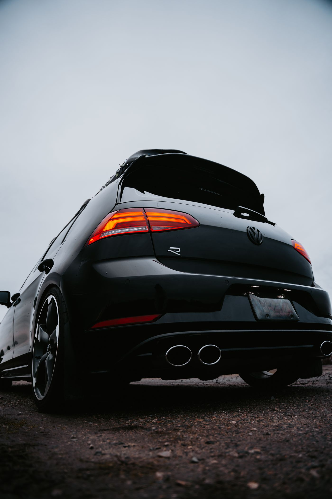
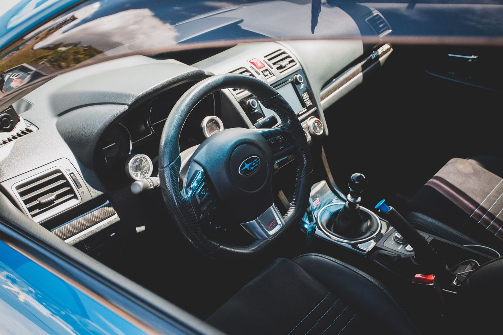

Aplicação de películas
Informe marca, modelo e ano do carro, além dos vidros que deseja atender. Esses detalhes ajudam a iniciar a consulta e preparar o orçamento.
Consultar aplicação ↗
Um novo olhar para cada detalhe. Películas automotivas na Dantas Prime Films, com atendimento somente com hora marcada.
A Dantas Prime Films trabalha com películas automotivas. O ponto de partida é o seu veículo: conte o modelo e o que você procura para consultar as possibilidades de aplicação.
O atendimento é com hora marcada. Pelo WhatsApp, você conversa diretamente com a Dantas, esclarece suas dúvidas e combina os detalhes antes de agendar.
Vamos falar sobre o seu carro ↗Películas automotivas: consulte a aplicação e as opções disponíveis para o seu veículo.
Informe marca, modelo e ano do carro, além dos vidros que deseja atender. Esses detalhes ajudam a iniciar a consulta e preparar o orçamento.
Consultar aplicação ↗
Quer saber quais materiais e acabamentos estão disponíveis? Converse com a Dantas sobre as características de cada opção antes de escolher.
Tirar minhas dúvidas ↗
Vidros, linhas e interior. Referências visuais do universo automotivo para a sua próxima conversa com a Dantas.
Fotografias ilustrativas de banco de imagens.
O contato começa pelo WhatsApp. Abra cada etapa para saber como preparar a sua conversa.
Envie o modelo e o ano do veículo. Conte se já existe película e quais vidros você deseja atender.
Consulte com a Dantas os materiais disponíveis, valores e condições para o serviço que você procura.
Confirme a disponibilidade e os detalhes do atendimento diretamente pelo WhatsApp antes de se deslocar.
Algumas informações para começar.
Sim. O atendimento é somente com hora marcada. Consulte a disponibilidade pelo WhatsApp e confirme seu horário.
Informe o modelo e o ano do carro, os vidros que deseja atender e se há película instalada. A Dantas confirma as opções e valores na conversa.
Os materiais, tonalidades e respectivas características devem ser consultados diretamente com a Dantas Prime Films.
O prazo depende do veículo e do serviço combinado. Confirme a previsão junto com seu agendamento.
Peça as orientações de uso, limpeza e condições de garantia referentes à película escolhida antes de fechar o serviço.
Conte seu carro.
Fale com a Dantas.
Prepare sua mensagem ou fale diretamente com a Dantas Prime Films pelo WhatsApp.
(11) 94456-4102Atendimento somente com hora marcada.
Região de atendimento a confirmar.
Endereço e cidade serão informados em breve. Por enquanto, consulte a localização diretamente no WhatsApp antes de agendar sua visita.
Consultar localização ↗